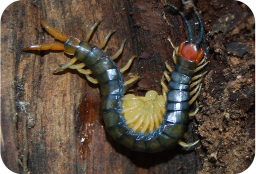
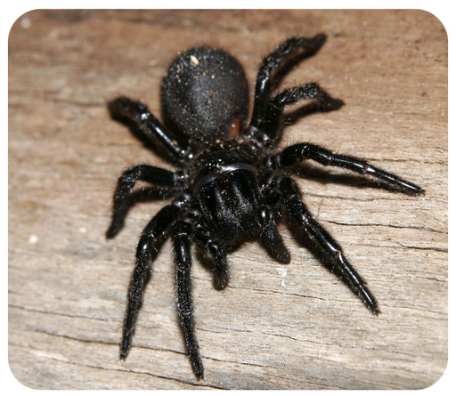
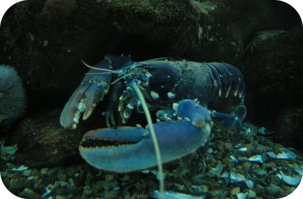
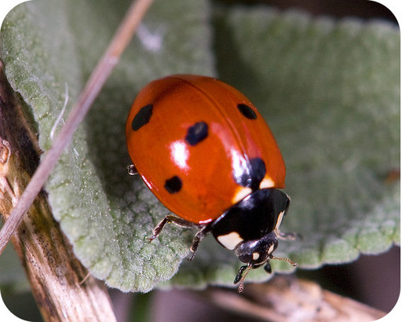

| Subphylum (includes) | Description | Example |
|---|---|---|
| Myriapoda (centipedes, millipedes) | terrestrial; herbivores or predators; 10–400 walking legs; poison claws for hunting |
centipede  |
| Chelicerata (spiders, scorpions, mites, ticks, horseshoe crabs, sea spiders) | mainly terrestrial; predators or parasites; 8 walking legs; appendages called chelicerae for grasping prey; poison fangs for killing prey; no mandibles, maxillae, antennae; two body segments |
spider  |
| Crustacea (lobsters, crabs, shrimp, barnacles, krill) | mainly aquatic, predators, scavengers, or filter feeders; two pairs of antennae and claws for hunting; unique larval stage (called “nauplius”) with head appendages for swimming |
lobster  |
| Hexapoda (ants, flies, grasshoppers, beetles, butterflies, moths, bees, springtails) | mainly terrestrial or aerial; herbivores, predators, parasites, scavengers, or decomposers; 6 walking legs; many modified appendages, such as wings for flying |
beetle  |